Neural Network¶
-
Artificial neural network (in particular deep NN) is the most popular machine learning method these days
-
They are inspired by human brains (at least initially)
-
Artifical neuron is a mathematical function
-
Neurons are connected with each other (kind of synapses)
-
Usually connections have some weights
-
Today, feedforward neural networks (multilayer perceptrons) will be discussed
-
However, before we go there, lets start with linear and logistic regression
# our standard imports: matplotlib and numpy import matplotlib.pyplot as plt import numpy as np # just to overwrite default colab style plt.style.use('default') plt.style.use('seaborn-talk')
Linear regression¶
-
Lets consider dataset \left\{(\vec x^{(i)}, y^{(i)}); i = 1,\cdots, N\right\}
-
where explanatory variables (features) \vec x^{(i)} = (x^{(i)}_1,\cdots, x^{(i)}_n) \in \mathcal{R}^n
-
and dependent variables (targets) y^{(i)} \in \mathcal{R}
-
Lets define the hypothesis:
h(\vec x) = w_0 + w_1x_1 + \cdots w_nx_n
-
In other words we claim that y^{(i)} can be calculated from h(\vec x^{(i)}), if we know weights w_i
-
For convenience lets set x^{(i)}_0 = 1, so we can rewrite the hypothesis:
h(\vec x) = \sum_{i=0}^nw_ix_i = \vec w \cdot \vec x
Normal equation¶
-
One could find weights using normal equation
-
Let Y^T = (y^{(1)}, \cdots, y^{(N)}), X^T = \left((\vec x^{(1)})^T, \cdots, (\vec x^{(N)})^T\right) and W^T = (w_0, \cdots, w_n)
-
Then we can write a matrix equation:
Y = XW
-
The normal equation (minimizing the sum of the square differences between left and right sides):
X^TY = X^TXW
-
Thus, one could find weights by calculating:
W = (X^TX)^{-1}X^TY
-
Doable, but computational expensive
Gradient descent¶
-
Gradient descent is an iterative algorithm for finding the minimum
-
For linear regression the cost function (or loss function) is given by mean squared error:
L(\vec w) = \frac{1}{2N}\sum\limits_{i=1}^N\left(h(\vec x^{(i)}) - y^{(i)}\right)^2
-
It measures the quality of given set of parameters / weights
-
Please note, that \frac{1}{2} is added for convenience to MSE definition
-
In gradient descent method weights are updated w.r.t. the gradient of cost function:
w_j \rightarrow w_j - \alpha\frac{\partial L(\vec w)}{\partial w_j} = w_j - \frac{\alpha}{N}\sum\limits_{i=1}^{N}\left(h(\vec x^{(i)}) - y^{(i)}\right)x^{(i)}_j
-
Where \alpha is training rate
Example¶
-
Lets generate some fake data according to y = ax + b for given slope and intercept
-
And add some noise to y
### SETTINGS ### N = 100 # number of samples a = 0.50 # slope b = 0.50 # y-intercept s = 0.25 # sigma ### GENERATE SAMPLES ### X = (10.0 * np.random.sample(N)) # features Y = [(a * X[i] + b) + np.random.normal(0,s) for i in range(N)] # targets ### PLOT SAMPLES ### plt.xlabel('Feature') plt.ylabel('Target') plt.scatter(X, Y, marker='.');

- It is time to learn about new framework
Theano is a Python library that allows you to define, optimize, and evaluate mathematical expressions involving multi-dimensional arrays efficiently. It can use GPUs and perform efficient symbolic differentiation.
!pip install theano
-
In this example the hypothesis is given by:
h(x) = \vec w \cdot \vec x = ax + b
-
where \vec w = (b, a) and \vec x = (1, x)
-
Lets first create symbolic variable for:
-
feature vector X = (x_1, \cdots, x_N)
-
target Y = (y_1, \cdots, y_N)
-
weights a and b (or w_1 and w_0)
-
import theano import theano.tensor as T x = T.vector('x') # feature vector y = T.vector('y') # target vector # weights initialized randomly #a = theano.shared(np.random.randn(), name = 'w') #b = theano.shared(np.random.randn(), name = 'b') # initial weights by hand for demonstration (random may be to close) a = theano.shared(-0.5, name = 'w') b = theano.shared(1.0, name = 'b')
-
Having that, we can define:
-
hypothesis
-
cost function
-
gradients
-
pred = T.dot(x, a) + b # hyphothesis cost = T.sum(T.pow(pred - y, 2)) / N # cost function grad_a, grad_b = T.grad(cost, [a, b]) # gradients
- And finally, we define gradient descent method (which also returns the value of the cost function)
alpha = 0.005 # learning rate # at each training step we update weights: # w -> w - alpha * grad_w and b -> b - alpha * grad_b train = theano.function(inputs = [x,y], outputs = cost, updates = ((a, a - alpha * grad_a), (b, b - alpha * grad_b)))
- Each training step involves the full cycle on training data (epoch)
n_epochs = 1000 # number of training steps / epochs costs = [] # to keep track on the value of cost function on each step weights = [] # to store few set of weights keep = (0, 10, 100, 500, 1000) # save result for some epochs passed for i in range(n_epochs + 1): if i in keep: weights.append((a.get_value(), b.get_value())) costs.append(train(X, Y))
- Finally, we can visualize the results
plt.figure(figsize=(10, 15)) n_rows = 3 n_cols = 2 for i, (a_, b_) in enumerate(weights): plt.subplot(n_rows, n_cols, i+1) plt.title('Epoch %i: y = %.2f x + %.2f' % (keep[i], a_, b_)) plt.xlabel('Feature') plt.ylabel('Target') x_ = np.arange(0, 10, 0.1) plt.plot(x_, a_*x_ + b_, color='C1') plt.scatter(X, Y, marker='.') plt.subplot(n_rows, n_cols, len(weights) + 1) plt.title("Cost function") plt.xlabel("Epoch") plt.ylabel("L") plt.ylim([0,0.2]) plt.plot(range(len(costs)), costs) plt.tight_layout();
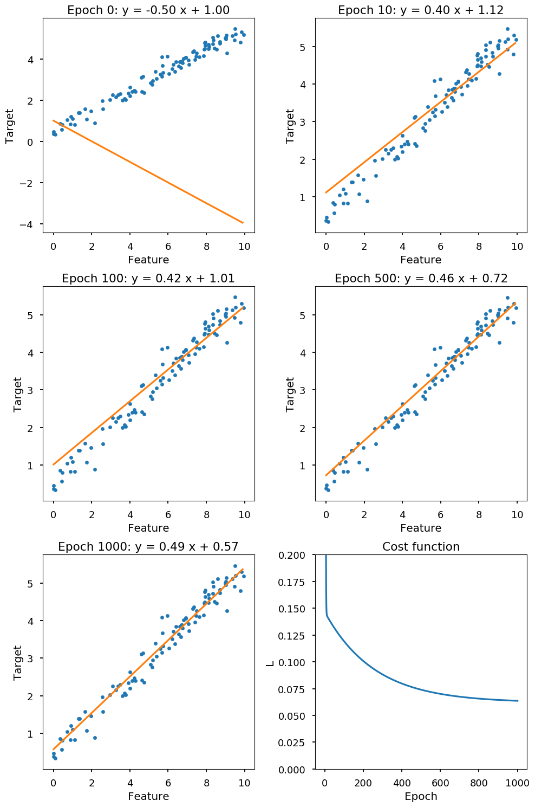
Logistic regression¶
-
Logistic regression is used when dependent variable (target) is categorical
-
Lets consider dataset \left\{(\vec x^{(i)}, y^{(i)}); i = 1,\cdots, N\right\}
-
where independent variables \vec x^{(i)} = (1, x^{(i)}_1,\cdots, x^{(i)}_n)
-
and dependent variables (we start with binary case) y^{(i)} \in \{0, 1\}
Hypothesis¶
-
The dependent variable follows Bernoulli distribution (1 with probability p, 0 with probability 1-p)
-
We want to link the independent variable with Bernoulli distribution
-
The logit function translates a linear combination \vec w \cdot \vec x (which can result in any value) into probability distribution:
logit(p) = \ln(odds) = \ln\left(\frac{p}{1-p}\right) = \vec w \cdot \vec x
p_ = np.arange(0.01, 0.99, 0.01) plt.title("Logit function") plt.xlabel("p") plt.ylabel("$\ln(p/(1-p))$") plt.plot(p_, np.log(p_ / (1 - p_)));
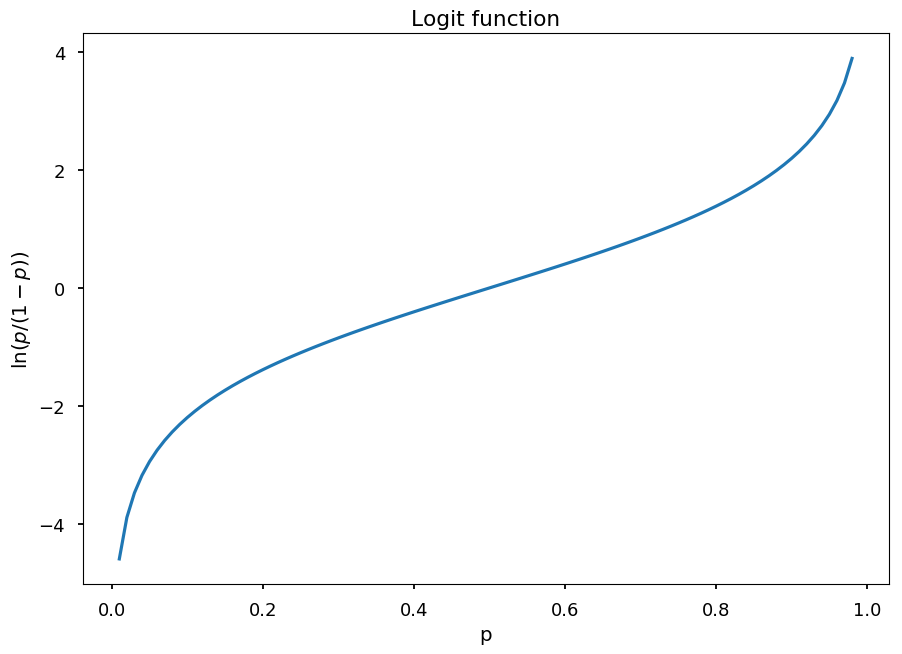
-
In logistic regression hypothesis is defined as the inverse function of logit - logistic function:
h(\vec x) = \frac{1}{1 + e^{-\vec w \cdot \vec x}}
-
Thus, the probability of 1 is given by P(y = 1~|~\vec x, \vec w) = h(\vec x)
-
and the probability of 0 is given by P(y = 0~|~\vec x, \vec w) = 1 - h(\vec x)
x_ = np.arange(-10, 10, 0.1) plt.title("Logistic function") plt.xlabel("x") plt.ylabel("$1/(1 + e^{-x})$") plt.plot(x_, 1 / (1 + np.exp(-x_)));
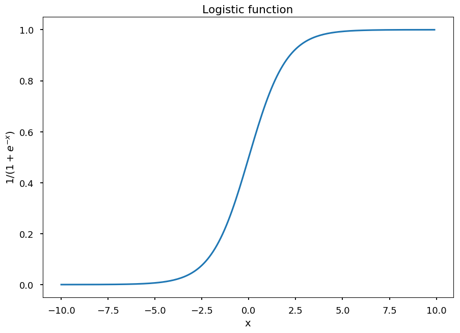
Cost function¶
-
The probablity mass function (PMS) for y (for given \vec w):
p(y~|~\vec x, \vec w) = h(\vec x)^y\cdot \left(1 - h(\vec x)\right)^{1 - y}
-
The likelihood function is PMS considered as a function of \vec w (for fixed y)
-
Thus, for a single data point (\vec x^{(i)}, y^{(i)}):
l(\vec w) = h(\vec x^{(i)})^{y^{(i)}}\cdot \left(1 - h(\vec x^{(i)})\right)^{1 - y^{(i)}}
-
And for the whole dataset:
l(\vec w) = \prod\limits_{i=1}^N h(\vec x^{(i)})^{y^{(i)}}\cdot \left(1 - h(\vec x^{(i)})\right)^{1 - y^{(i)}}
-
The goal is to maximize likelihood w.r.t to \vec w, which is the same as maximizing log-likelihood:
\ln\left(l(\vec w)\right) = \sum\limits_{i=1}^N\left[y^{(i)}\ln\left(h(\vec x^{(i)})\right) + \left(1 - y^{(i)}\right)\ln\left(1 - h(\vec x^{(i)})\right)\right]
-
Which is the same as minimizing the cost function L(\vec w) = -\frac{1}{N}\ln\left(l(\vec w)\right)
-
Once again using gradient descent method we can update weights using:
w_j \rightarrow w_j - \alpha\frac{\partial L(\vec w)}{\partial w_j} = w_j - \frac{\alpha}{N}\sum\limits_{i=1}^{N}\left(y^{(i)} - h(\vec x^{(i)})\right)x^{(i)}_j
Quick proof¶
- First, lets consider the derivative of h
$\begin{eqnarray}
\frac{\partial h(\vec x)}{\partial w_j} & = & \frac{\partial}{\partial w_j}\left(1 + e^{-\vec w \cdot \vec x}\right)^{-1} \\
& = & e^{-\vec w \cdot \vec x}\left(1 + e^{-\vec w \cdot \vec x}\right)^{-2}x_j \\
& = & (1 + e^{-\vec w \cdot \vec x} - 1)\left(1 + e^{-\vec w \cdot \vec x}\right)^{-2}x_j \\
& = & \left(1 + e^{-\vec w \cdot \vec x}\right)^{-1}x_j - \left(1 + e^{-\vec w \cdot \vec x}\right)^{-2}x_j\\
& = & h(\vec x)x_j - h^2(\vec x)x_j \\
& = & h(\vec x)\left(1 - h(\vec x)\right)x_j
\end{eqnarray}$
-
Thus, \frac{\partial}{\partial w_j}\ln\left(h(\vec x)\right) = \left(1 - h(\vec x)\right)x_j
-
and \frac{\partial}{\partial w_j}\ln\left(1 - h(\vec x)\right) = -h(\vec x)x_j
-
Finally, we have
\frac{\partial}{\partial w_j}\left[y\ln\left(h(\vec x)\right) + (1 - y)\ln\left(1 - h(\vec x)\right)\right] = \left[y\left(1 - h(\vec x)\right) - (1 - y)h(\vec x)\right]x_j = \left[y - h(\vec x)\right]x_j
Example¶
-
Lets consider the following dataset
-
x - number of hours spent studying machine learning
-
y - student passed (1) or failed (0) the exam
-
N = 50 # number of students per class X = np.concatenate((np.random.random((N)) * 35, 30 + np.random.random((N)) * 25)) Y = np.concatenate(([0]*N, [1]*N)) plt.xlabel("Study time [h]") plt.ylabel("Success") plt.scatter(X, Y);

- Once again lets use
theano
import theano import theano.tensor as T x = T.vector('x') # feature vector y = T.vector('y') # target vector a = theano.shared(np.random.randn(), name = 'w') # weights initialized randomly b = theano.shared(np.random.randn(), name = 'b') hypo = 1 / (1 + T.exp(-T.dot(x, a) - b)) # hyphothesis xent = - y * T.log(hypo) - (1 - y) * T.log(1 - hypo) # cross-entropy loss function cost = xent.sum() # cost function grad_a, grad_b = T.grad(cost, [a, b]) # gradients alpha = 0.01 # learning rate # at each training step we update weights: # w -> w - alpha * grad_w and b -> b - alpha * grad_b train = theano.function(inputs = [x,y], outputs = cost, updates = ((a, a - alpha * grad_a), (b, b - alpha * grad_b)))
- For the training we will scale features to [0, 1], which helps gradient descent to converge faster
x_min = min(X) x_max = max(X) s = lambda x: (x - x_min) / (x_max - x_min) # scale
- Now, we train the model on normalized data
n_epochs = 1000 [train(s(X), Y) for _ in range(n_epochs)] plt.xlabel("Study time [h]") plt.ylabel("Success") plt.scatter(X, Y) h_ = np.arange(0, 60, 0.01) plt.plot(h_, 1 / (1 + np.exp(-s(h_)*a.get_value() - b.get_value())), 'C1') plt.plot([0, 60], [0.5, 0.5], 'C2--');
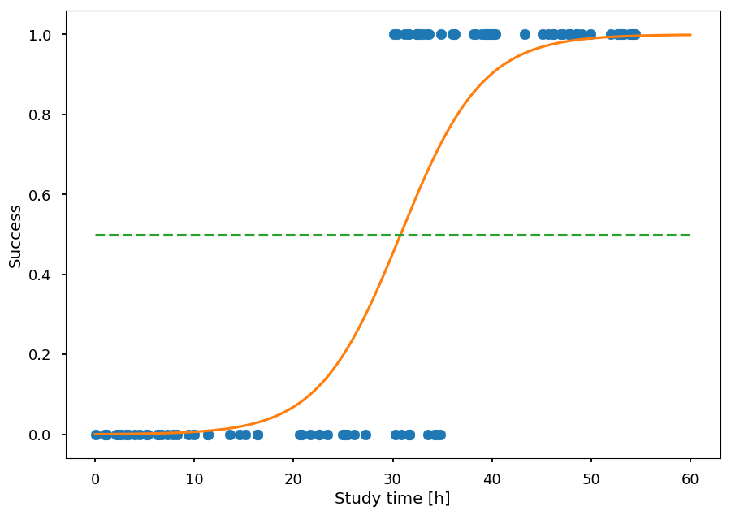
-
The orange line gives the probability of success as a function of study time
-
To classify a student one can make a cut at 0.5
Multinominal logistic regression¶
-
So far, we considered dependent variable to be binary - it is time to generalize LR to K possible classes
-
Lets consider dataset \left\{(\vec x^{(i)}, y^{(i)}); i = 1,\cdots, N\right\}
-
where independent variables \vec x^{(i)} = (1, x^{(i)}_1,\cdots, x^{(i)}_n)
-
and dependent variables y^{(i)} \in \{1, \cdots, K\}
Logit approach¶
-
The one way to go is to prepare K - 1 binary classifiers w.r.t. to a chosen class as a pivot
-
The odds of y being j \in \left\{1, \cdots, K-1\right\} (chosing K as a pivot) is given by: \frac{P(y = j)}{P(y = K)}
-
which leads to K-1 equations with different weights for each possible outcome:
$\begin{eqnarray}
\ln\frac{P(y = 1)}{P(y = K)} = \vec w_1 \cdot \vec x & \Rightarrow & P(y=1) = P(y=K)e^{\vec w_1 \cdot \vec x} \\
\ln\frac{P(y = 2)}{P(y = K)} = \vec w_2 \cdot \vec x & \Rightarrow & P(y=2) = P(y=K)e^{\vec w_2 \cdot \vec x} \\
& ... & \\
\ln\frac{P(y = K-1)}{P(y = K)} = \vec w_{K-1} \cdot \vec x & \Rightarrow & P(y=K-1) = P(y=K)e^{\vec w_{K-1} \cdot \vec x} \\
\end{eqnarray}$
-
And as they have to sum to 1 we get:
P(y=K) = 1 - \sum\limits_{i=1}^{K-1}P(y=K)e^{\vec w_i \cdot \vec x} \Rightarrow P(y = K) = \frac{1}{1 + \sum\limits_{i=1}^{K-1}e^{\vec w_i \cdot \vec x}}
-
Thus, the probability of y = j, for j \in \left\{1, \cdots, K-1\right\} is given by:
P(y=j) = \frac{e^{\vec w_j \cdot \vec x}}{1 + \sum\limits_{i=1}^{K-1}e^{\vec w_i \cdot \vec x}}
Check binary case¶
-
Lets consider binary classification with 0 being a pivot
-
Then we have:
p = P(y=1) = \frac{e^{\vec w \cdot \vec x}}{1 + e^{\vec w \cdot \vec x}} = \frac{1}{1 + e^{-\vec w \cdot \vec x}}
-
so the same result as before
Softmax approach¶
- An alternative approach (which works for any number of classes) is to consider each class separately with its own parameters set and include the normalization factor ensuring that we get a probability distribution:
$\begin{eqnarray}
\ln P(y = 1) = \vec w_1 \cdot \vec x - \ln Z & \Rightarrow & P(y=1) = \frac{1}{Z}e^{\vec w_1 \cdot \vec x} \\
\ln P(y = 2) = \vec w_2 \cdot \vec x - \ln Z & \Rightarrow & P(y=2) = \frac{1}{Z}e^{\vec w_2 \cdot \vec x} \\
& ... & \\
\ln P(y = K) = \vec w_K \cdot \vec x - \ln Z & \Rightarrow & P(y=K) = \frac{1}{Z}e^{\vec w_K \cdot \vec x} \\
\end{eqnarray}$
-
As they have to sum to 1:
\frac{1}{Z}\sum\limits_{i=1}^Ke^{\vec w_i \cdot \vec x} = 1 \Rightarrow Z = \sum\limits_{i=1}^Ke^{\vec w_i \cdot \vec x}
-
Thus, the probability of y = j, for j \in \left\{1, \cdots, K\right\} is given by:
P(y=j) = \frac{e^{\vec w_j \cdot \vec x}}{\sum\limits_{i=1}^{K}e^{\vec w_i \cdot \vec x}}
-
which is called softmax function
Check binary case¶
- For y \in \left\{0, 1\right\} we have:
$\begin{eqnarray}
P(y = 0) & = & \frac{e^{\vec w_0 \cdot \vec x}}{e^{\vec w_0 \cdot \vec x} + e^{\vec w_1 \cdot \vec x}} \\
P(y = 1) & = & \frac{e^{\vec w_1 \cdot \vec x}}{e^{\vec w_0 \cdot \vec x} + e^{\vec w_1 \cdot \vec x}}
\end{eqnarray}$
-
Please note, that this model is overspecified! \rightarrow P(y = 0) + P(y = 1) = 1 (always)
-
That means, that once we have one probability the other is given, so we can choose one of \vec w_i arbitrary - lets choose \vec w_0 = 0 (and \vec w_1 \equiv \vec w):
P(y = 1) = \frac{e^{\vec w \cdot \vec x}}{1 + e^{\vec w\cdot x}} = \frac{1}{1 + e^{-\vec w \cdot x}}
Cost function¶
-
Lets recall that in our notation we have:
-
dataset: \left\{(\vec x^{(i)}, y^{(i)}); i = 1,\cdots, N\right\}
-
features: \vec x^{(i)} = (1, x^{(i)}_1,\cdots, x^{(i)}_n)
-
targets: y^{(i)} \in \{1, \cdots, K\}
-
-
For every possible outcome we have a corresponding vector of weights \vec w_j (for j = 1, \cdots, K) - so in fact we have a matrix of parameters (W)
-
The hypothesis is given by a vector:
h(\vec x) = \left[\begin{array}{c}\frac{e^{\vec w_1 \cdot \vec x}}{\sum\limits_{i=1}^{K}e^{\vec w_i \cdot \vec x}} \\ \frac{e^{\vec w_2 \cdot \vec x}}{\sum\limits_{i=1}^{K}e^{\vec w_i \cdot \vec x}} \\ ... \\ \frac{e^{\vec w_K \cdot \vec x}}{\sum\limits_{i=1}^{K}e^{\vec w_i \cdot \vec x}}\end{array}\right]
-
The prediction for unseen sample is done using
argmaxfunction -
As before we define the cost function as the negative log-likelihood:
L(W) = -\frac{1}{N}\sum\limits_{i=1}^N\ln\left[\frac{e^{\vec w_{y^{(i)}} \cdot \vec x^{(i)}}}{\sum\limits_{j=1}^{K}e^{\vec w_j \cdot \vec x^{(i)}}}\right] = -\frac{1}{N}\sum\limits_{i=1}^N\left[\vec w_{y^{(i)}} \cdot \vec x^{(i)} - \ln\sum\limits_{j=1}^{K}e^{\vec w_j \cdot \vec x^{(i)}}\right]
Gradient¶
-
We need to calculate the partial derivative for each parameter w_{ab}
-
a = 1, \cdots, K (possible outcome y)
-
b = 0, \cdots, n (\vec x coordinate)
-
-
For the first term we have:
\frac{\partial}{\partial w_{ab}} \vec w_{y^{(i)}} \cdot \vec x^{(i)} = [y^{(i)} = a]x^{(i)}_b
-
For the second term we have:
$\begin{eqnarray}
\frac{\partial}{\partial w_{ab}} \ln\sum\limits_{j=1}^{K}e^{\vec w_j \cdot \vec x^{(i)}} & = & \frac{\sum\limits_{j=1}^{K}e^{\vec w_j \cdot \vec x^{(i)}} \cdot [y^{(i)} = a] \cdot x^{(i)}_b}{\sum\limits_{j=1}^{K}e^{\vec w_j \cdot \vec x^{(i)}}} \\ & = & \sum\limits_{j=1}^{K}\left[\frac{e^{\vec w_j \cdot \vec x^{(i)}}}{\sum\limits_{j=1}^{K}e^{\vec w_j \cdot \vec x^{(i)}}}\cdot [y^{(i)} = a] \cdot x^{(i)}_b\right]\\ & = & \sum\limits_{j=1}^{K}\left[P(y = j~|~\vec x^{(i)})\cdot [y^{(i)} = a] \cdot x^{(i)}_b\right] \\ & = & P(y=a~|~\vec x^{(i)})x^{(i)}_b
\end{eqnarray}$
-
Finally, the gradient of the cost function is given by:
\frac{\partial L(W)}{\partial w_{ab}} = -\frac{1}{N}\sum\limits_{i=1}^N\left[[y^{(i)}=a]x^{(i)}_b - P(y=a~|~\vec x^{(i)})x^{(i)}_b\right]
-
And for every iteration of the gradient descent method weights are updated according to:
w_{ab} \rightarrow w_{ab} - \alpha\frac{\partial L(W)}{\partial w_{ab}}
Example¶
-
Let a student have two features:
-
initial knowledge: x_1 \in [0, 100]
-
hours spent studying: x_2 \in [0, 50]
-
-
And, based on these two features, a grade can be assigned to a student:
- target: y \in \left\{2, 3, 4, 5\right\}
Dataset¶
def grade(init_know, study_time): """Arbitrary grading system.""" score = np.random.normal(init_know + 2*study_time, 5) if score > 90: return 3 # bdb elif score > 70: return 2 # db elif score > 50: return 1 # dst else: return 0 # ndst
- The training set
N = 1000 # number of students X = np.random.sample((N, 2)) * [100, 50] Y = np.array([grade(*student) for student in X], dtype='int32')
plt.xlabel("Initial knowledge") plt.ylabel("Study time") for student, g in zip(X, Y): plt.scatter(*student, color='C'+str(g), marker='.')

Data preparation¶
- For the training process we scale features to [0, 1] - otherwise initial knowledge would weight more!
X_train = np.multiply(X, np.array([1/100, 1/50]))
- Lets add 1 for bias term to the dataset
X_train = np.hstack((np.ones((N, 1)), X_train))
- How does it look?
print("Original:", X[:5], "Preprocessed:", X_train[:5], sep="\n\n")
Original: [[ 7.47319311 25.86221876] [21.66198394 33.34522121] [69.87399886 4.53759853] [75.83844581 22.05176574] [17.38539272 47.02800299]] Preprocessed: [[1. 0.07473193 0.51724438] [1. 0.21661984 0.66690442] [1. 0.69873999 0.09075197] [1. 0.75838446 0.44103531] [1. 0.17385393 0.94056006]]
Training¶
- The implementation of MLR in
theano
import theano import theano.tensor as T x = T.matrix('x') # feature vectors y = T.ivector('y') # target vector W = theano.shared(np.random.randn(3, 4)) # weight matrix (2 features + bias, # 4 possible outcomes) hypo = T.nnet.softmax(T.dot(x,W)) # hyphothesis cost = -T.mean(T.log(hypo)[T.arange(y.shape[0]), y]) # cost function grad_W = T.grad(cost=cost, wrt=W) # gradients alpha = 0.5 # learning rate # define a training step train = theano.function(inputs = [x,y], outputs = cost, updates = [(W, W - alpha * grad_W)] ) # predict a class label predict = theano.function(inputs=[x], outputs=T.argmax(hypo, axis=1))
- The training process on normalized data
n_epochs = 10000 acc_train = [] # accuracy on training dataset for _ in range(n_epochs): # do a single step of gradient descent train(X_train, Y) # calculate accuracy with current set of weights acc_train.append((Y == predict(X_train)).sum() / Y.shape[0])
plt.xlabel("Epoch") plt.ylabel("Cost") plt.plot(range(len(acc_train)), acc_train);
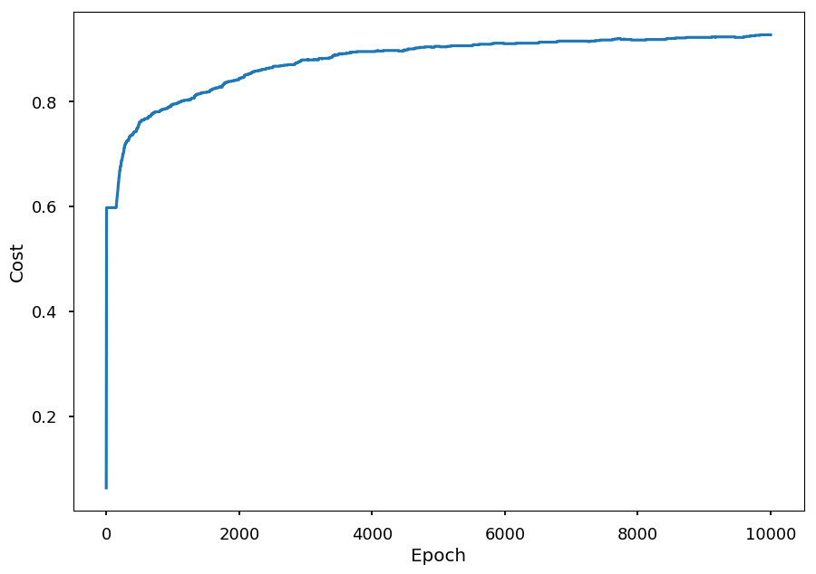
Validation¶
- First we need unseen data for testing
# another set of students X_test = np.random.sample((N, 2)) * [100, 50] Y_test = np.array([grade(*student) for student in X_test], dtype='int32') # normalize and add bias X_test_normalized = np.multiply(X_test, np.array([1/100, 1/50])) X_test_normalized = np.hstack((np.ones((N, 1)), X_test_normalized))
- To predict a grade we use the function
predictdefined earlier
Y_pred = predict(X_test_normalized)
- We can visualize the prediction
plt.xlabel("Initial knowledge") plt.ylabel("Study time") for student, g in zip(X_test, Y_pred): plt.scatter(*student, color='C'+str(g), marker='.')

- and calculate the accuracy
(Y_test == Y_pred).sum() / Y_test.shape[0]
0.906
Softmax visualization¶
-
Lets visualize what the model has just learned
-
First we need an easy way to calculate softmax output for a student
softmax = theano.function(inputs=[x], outputs=hypo)
- Now, we can use it on the validation dataset
probs = softmax(X_test_normalized)
- For every sample softmax returns an array of the probabilities of belonging to each class
print(probs.shape)
(1000, 4)
- We can plot each class separately
from mpl_toolkits.mplot3d import Axes3D grades = ("ndst", "dst", "db", "bdb") for i in range(4): fig = plt.figure() ax = fig.add_subplot(111, projection='3d') ax.set_xlabel("Initial knowledge", labelpad=20) ax.set_ylabel("Study time", labelpad=20) ax.set_title("Grade: " + grades[i]) ax.scatter(X_test.T[0], X_test.T[1], probs.T[i], marker='.')


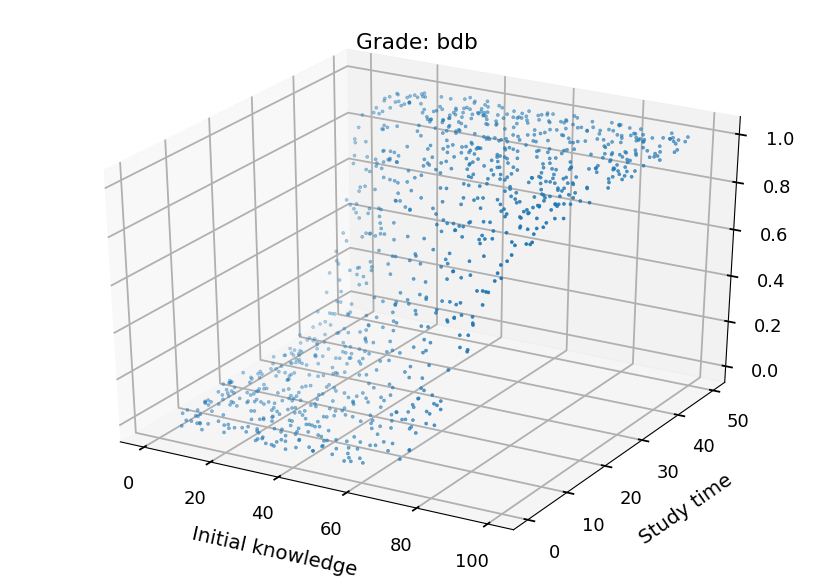
Neural Networks¶
-
Here are some helpful functions to draw neural networks
-
Lets just skip them - it is just bunch of matplotlib
# the functions below grabbed from http://www.astroml.org/book_figures/appendix/fig_neural_network.html radius = 0.3 arrow_kwargs = dict(head_width=0.05, fc='black') def draw_connecting_arrow(ax, circ1, rad1, circ2, rad2): theta = np.arctan2(circ2[1] - circ1[1], circ2[0] - circ1[0]) starting_point = (circ1[0] + rad1 * np.cos(theta), circ1[1] + rad1 * np.sin(theta)) length = (circ2[0] - circ1[0] - (rad1 + 1.4 * rad2) * np.cos(theta), circ2[1] - circ1[1] - (rad1 + 1.4 * rad2) * np.sin(theta)) ax.arrow(starting_point[0], starting_point[1], length[0], length[1], **arrow_kwargs) def draw_circle(ax, center, radius): circ = plt.Circle(center, radius, fill=False, lw=2) ax.add_patch(circ)
# based on borrowed function we can create a new one to draw NN def draw_net(input_size, output_size, hidden_layers=[], w=6, h=4): """Draw a network""" x = 0 # initial layer position ax = plt.subplot() ax.set_aspect('equal') ax.axis('off') ax.set_xlim([-2, -2 + w]) ax.set_ylim([-h / 2 , h / 2 + 1]) # set y position y_input = np.arange(-(input_size - 1) / 2, (input_size + 1) / 2, 1) y_output = np.arange(-(output_size - 1) / 2, (output_size + 1) / 2, 1) y_hidden = [np.arange(-(n - 1) / 2, (n + 1) / 2, 1) for n in hidden_layers] # draw input layer plt.text(x, h / 2 + 0.5, "Input\nLayer", ha='center', va='top', fontsize=16) for i, y in enumerate(y_input): draw_circle(ax, (x, y), radius) ax.text(x - 0.9, y, '$x_%i$' % (input_size - 1 - i), ha='right', va='center', fontsize=16) draw_connecting_arrow(ax, (x - 0.9, y), 0.1, (x, y), radius) last_layer = y_input # last layer y positions # draw hidden layers for ys in y_hidden: # shift x x += 2 plt.text(x, h / 2 + 0.5, "Hidden\nLayer", ha='center', va='top', fontsize=16) # draw neurons for each hidden layer for i, y1 in enumerate(ys): draw_circle(ax, (x, y1), radius) # connect a neuron with all neurons from previous layer if i != len(ys) - 1: # skip bias for y2 in last_layer: draw_connecting_arrow(ax, (x - 2, y2), radius, (x, y1), radius) # update last layer last_layer = ys x += 2 # update position for output layer # draw output layer plt.text(x, h / 2 + 0.5, "Output\nLayer", ha='center', va='top', fontsize=16) for i, y1 in enumerate(y_output): draw_circle(ax, (x, y1), radius) ax.text(x + 0.8, y1, 'Output', ha='left', va='center', fontsize=16) draw_connecting_arrow(ax, (x, y1), radius, (x + 0.8, y1), 0.1) # connect each output neuron with all neurons from previous layer for y2 in last_layer: draw_connecting_arrow(ax, (x - 2, y2), radius, (x, y1), radius)
Neuron¶
-
As mentioned at the beginning, we are going to discuss feedforward neural networks
-
Lets start with a single neuron
-
What we were doing so far
-
We had some training samples with N features
-
We assumed linear model
-
We connected features with outcomes using linear, logistic or softmax function
-
-
Thus, we considered somthing like this:
draw_net(3, 1)
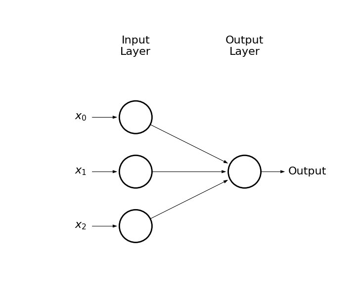
-
Output circle represents a neuron
-
Arrows represent connections (weights)
-
A neuron is defined by an activation function, e.g.:
-
binary step
-
logistic function
-
hyperbolic tangent
-
rectified linear unit (ReLU)
-
import math def binary_step(x): return 0 if x < 0 else 1 def logistic(x): return 1 / (1 + math.exp(-x)) def tanh(x): return math.tanh(x) def relu(x): return 0 if x < 0 else x x = np.linspace(-5, 5, 100) bs = [binary_step(x_) for x_ in x] lf = [logistic(x_) for x_ in x] th = [tanh(x_) for x_ in x] re = [relu(x_) for x_ in x] _, ((ax1, ax2), (ax3, ax4)) = plt.subplots(2, 2, figsize=(10,10)) ax1.set_title("Binary step") ax2.set_title("TanH") ax3.set_title("Logistic") ax4.set_title("ReLU") ax1.plot(x, bs) ax2.plot(x, lf) ax3.plot(x, th) ax4.plot(x, re);

Neural networks¶
-
Imagine that the output of a neuron is an input for another neuron
-
This way we can create another layer of neurons (hidden layer) which would be an input for the output layer
draw_net(3, 1, [5], w=9, h=6)
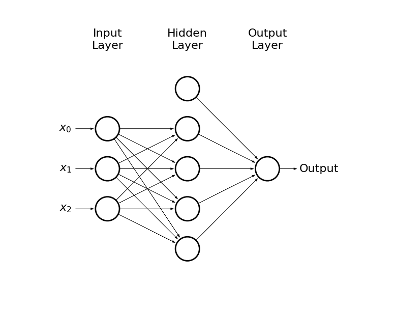
- Or we could get carried away
draw_net(3, 1, [5, 7, 9, 5], w=14, h=10)

-
This way we can solve non-linear problems
-
In general, the more the problem is complex the more neurons we need
-
The numbers of hidden layers and hidden neurons are hyperparameters of the model
-
If the NN is too small - underfitting
-
It the NN is too large - overfitting
-
-
Plase note, that we may have also many possible outcomes through e.g. softmax
draw_net(3, 4, [5, 7, 9, 5], w=14, h=10)
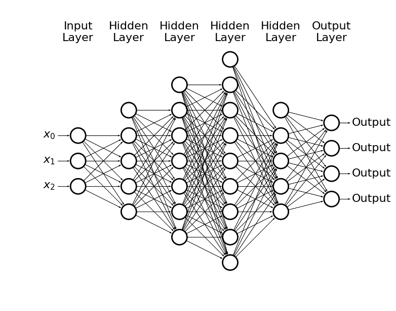
- How to train this monster?
Backpropagation¶
-
We can use the gradient descent method, but now we need to propagate the error through all layers:
-
Input -> forward propagation -> error
-
Backpropagate the error -> update weights
-
-
Lets see how it works on a simple example
draw_net(3, 2, [3], w=9, h=4)
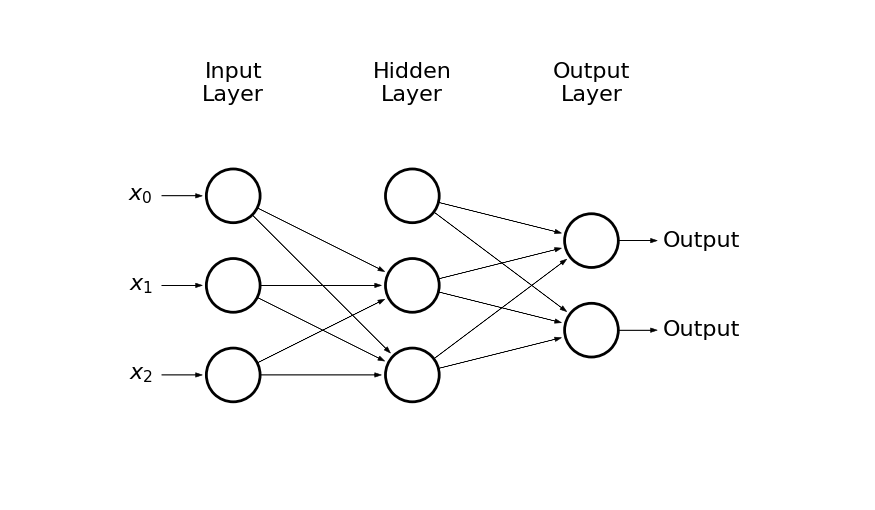
-
The input is given by: x_0 = 1, x_1, x_2
-
There are 2 hidden neurons + bias: h_0 = 1, h_1, h_2
-
And two possible outcomes: o_1, o_2
-
The input layer is connected with the hidden layer by weights: w^{(1)}_{ij}, where i = 0, 1, 2 and j = 1, 2, e.g.
- w^{(1)}_{12} is the weight connecting x_1 and h_2
-
The hidden layer is connected with the output layer by weights: w^{(2)}_{ij}
-
The input for a neuron h_k is given by:
h_{k, in} = w^{(1)}_{0k} + w^{(1)}_{1k} \cdot x_1 + w^{(1)}_{2k} \cdot x_2
-
And the output:
h_{k, out} = \left(1 + \exp(-h_{k, in})\right)^{-1}
-
The input for the outcome o_k is given by:
o_{k, in} = w^{(2)}_{0k} + w^{(2)}_{1k} \cdot h_{1, out} + w^{(2)}_{2k} \cdot h_{2, out}
-
And the output:
o_{k, out} = \left(1 + \exp(-o_{k, in})\right)^{-1}
-
Lets define the cost function:
L(w) = \frac{1}{2}\left(o_{1, true} - o_{1, out}\right)^2 + \frac{1}{2}\left(o_{2, true} - o_{2, out}\right)^2
-
To update weights using the gradient descent method we need to calculate \partial L(w) / \partial w^{(a)}_{ij}
-
As an example, let consider updating w^{(2)}_{11}:
\frac{\partial L(w)}{\partial w^{(2)}_{11}} = \frac{\partial L(w)}{\partial o_{1, out}}\cdot\frac{\partial o_{1, out}}{\partial o_{1, in}}\cdot\frac{\partial o_{1, in}}{\partial w^{(2)}_{11}}
AND, OR vs XOR¶
-
I will assume that basic logic gates do not need introduction
-
The point here is that AND and OR are linearly separable, and XOR is not
X = [[0,0], [0,1], [1,0], [1,1]] Y_and = [0, 0, 0, 1] Y_or = [0, 1, 1, 1] Y_xor = [0, 1, 1, 0] titles = ("AND", "OR", "XOR") for i, Y in enumerate([Y_and, Y_or, Y_xor]): ax = plt.subplot(131 + i) ax.set_xlim([-0.5, 1.5]) ax.set_ylim([-0.5, 1.5]) ax.set_aspect('equal') plt.title(titles[i]) plt.scatter(*zip(*X), c=Y) if i == 0: plt.plot([0, 1.5], [1.5, 0]) elif i == 1: plt.plot([-0.5, 1], [1, -0.5]) else: plt.text(0.5, 0.5, s="?", fontsize=16, ha='center', va='center') plt.tight_layout()

Single neuron approach¶
draw_net(3, 1)

-
Let logistic function be our hypothesis:
h(x_1, x_2) = \left(1 + \exp(-w_0 - w_1 \cdot x_1 - w_2 \cdot x_2)\right)^{-1}
-
For AND gate we want h(0, 0) = h(0, 1) = h(1, 0) = 0 and h(1, 1) = 1
-
The example is so simple, that we could guess weights:
-
w_0 << 0
-
w_0 + w_1 << 0
-
w_0 + w_2 << 0
-
w_0 + w_1 + w_2 >> 0
-
-
But lets build a neuron
import theano import theano.tensor as T x = T.matrix('x') # feature vector y = T.vector('y') # target vector w = theano.shared(np.random.randn(2), name = 'w') # weights initialized randomly b = theano.shared(np.random.randn(), name = 'b') # bias term hypo = 1 / (1 + T.exp(-T.dot(x, w) - b)) # hyphothesis xent = - y * T.log(hypo) - (1 - y) * T.log(1 - hypo) # cross-entropy loss function cost = xent.sum() # cost function grad_w, grad_b = T.grad(cost, [w, b]) # gradients alpha = 0.1 # learning rate # at each training step we update weights: # w -> w - alpha * grad_w and b -> b - alpha * grad_b train = theano.function(inputs = [x,y], outputs = cost, updates = ((w, w - alpha * grad_w), (b, b - alpha * grad_b))) predict = theano.function(inputs=[x], outputs=hypo)
- Train for all gates and save prediction
N = 1000 gates = ("AND", "OR", "XOR") gates_pred = {} for gate, data in zip(gates, (Y_and, Y_or, Y_xor)): # reset weights w.set_value(np.random.randn(2)) b.set_value(np.random.randn()) # train neuron [train(X, data) for _ in range(N)] gates_pred[gate] = predict(X)
- Lets see the result
for gate in gates: for i, (x1, x2) in enumerate(X): print("{} {} {} -> {}".format(x1, gate, x2, gates_pred[gate][i])) print()
0 AND 0 -> 0.00018774340087294284 0 AND 1 -> 0.04835388458963121 1 AND 0 -> 0.04834664667043076 1 AND 1 -> 0.9321880416392287 0 OR 0 -> 0.05096342740264947 0 OR 1 -> 0.9795405137359009 1 OR 0 -> 0.9798688809365104 1 OR 1 -> 0.9999769570570585 0 XOR 0 -> 0.49999999640124027 0 XOR 1 -> 0.49999999943423534 1 XOR 0 -> 0.4999999994362604 1 XOR 1 -> 0.5000000024692554
- As one could / should expect a linear classifier can not work for non-linear problems (like XOR gate)
Neural network approach¶
- Please note, that XOR is not linear, but it can be expressed in terms or linear problems combination
x XOR y = (x AND NOT y) OR (y AND NOT x)
- Lets consider NN with two hidden neurons
draw_net(3, 1, [3], w=8)
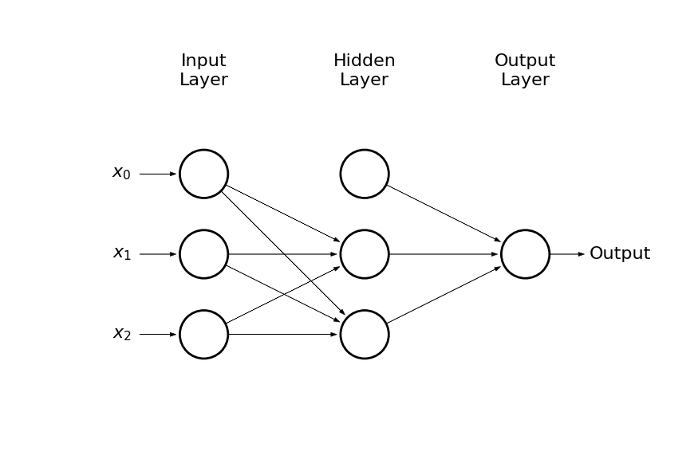
- Lets use
theanolast time to build the network
import theano import theano.tensor as T x = T.matrix('x') # feature vector y = T.vector('y') # target vector # first layer's weights (including bias) w1 = theano.shared(np.random.randn(3,2), name = 'w1') # second layer's weights (including bias) w2 = theano.shared(np.random.randn(3), name = 'w2') h = T.nnet.sigmoid(T.dot(x, w1[:2,]) + w1[2,]) # hidden layer o = T.nnet.sigmoid(T.dot(h, w2[:2,]) + w2[2,]) # output layer xent = - y * T.log(o) - (1 - y) * T.log(1 - o) # cross-entropy loss function cost = xent.sum() # cost function grad_w1, grad_w2 = T.grad(cost, [w1, w2]) # gradients alpha = 0.1 # learning rate # at each training step we update weights: # w -> w - alpha * grad_w and b -> b - alpha * grad_b train = theano.function(inputs = [x,y], outputs = cost, updates = ((w1, w1 - alpha * grad_w1), (w2, w2 - alpha * grad_w2))) predict = theano.function(inputs=[x], outputs=o)
- Train on XOR and print prediction
[train(X, Y_xor) for _ in range(10000)] prediction = predict(X) for i, (x1, x2) in enumerate(X): print("{} XOR {} -> {}".format(x1, x2, prediction[i]))
0 XOR 0 -> 0.005114740815278212 0 XOR 1 -> 0.9932581408757912 1 XOR 0 -> 0.9931902289336407 1 XOR 1 -> 0.004574250556087016
Again the same, but with tensorflow¶
-
Lets try to solve XOR gate using
tensorflow -
In comments there is
theanocode
import tensorflow as tf # x = T.matrix('x') # feature vector # y = T.vector('y') # target vector x = tf.placeholder(tf.float32, [4, 2]) y = tf.placeholder(tf.float32, [4, 1]) # w1 = theano.shared(np.random.randn(3,2), name = 'w1') # w2 = theano.shared(np.random.randn(3), name = 'w2') w1 = tf.Variable(tf.random_normal([3, 2]), name='w1') w2 = tf.Variable(tf.random_normal([3, 1]), name='w2') # h = T.nnet.sigmoid(T.dot(x, w1[:2,]) + w1[2,]) # o = T.nnet.sigmoid(T.dot(h, w2[:2,]) + w2[2,]) h = tf.sigmoid(tf.add(tf.matmul(x, w1[:2,]), w1[2,])) o = tf.sigmoid(tf.add(tf.matmul(h, w2[:2,]), w2[2,])) #xent = - y * tf.log(o) - (1 - y) * tf.log(1 - o) xent = tf.losses.log_loss(y, o) cost = tf.reduce_mean(xent) opt = tf.train.GradientDescentOptimizer(0.1).minimize(cost) init = tf.global_variables_initializer()
X = [[0,0], [1,0], [0,1], [1,1]] Y_xor = [[0], [1], [1], [0]] with tf.Session() as sess: sess.run(init) [sess.run(opt, feed_dict={x: X, y: Y_xor}) for _ in range(10000)] print(sess.run(o, feed_dict={x: X}))
[[0.01071231] [0.98791456] [0.98790956] [0.01878399]]
Simple regression with NN¶
- Lets consider a dataset generated from noised sinus distribution
from math import sin, cos, pi, exp def get_dataset(N=20, sigma=0.1): """Generate N training samples""" # X is a set of random points from [-1, 1] X = 2 * np.random.sample(N) - 1 # Y are corresponding target values (with noise included) Y = np.array([sin(pi*x) + np.random.normal(0, sigma) for x in X]) return X, Y # plot a sample X, Y = get_dataset(100, 0.25) x_ = np.arange(-1, 1, 0.01) plt.scatter(X, Y, color='C1') plt.plot(x_, np.sin(np.pi * x_), 'C0--');

-
We represent hidden neurons via logistic function (3 should be enough)
-
The output is just a sum of three hidden neurons outputs and bias term
draw_net(2, 1, [4], w=10)
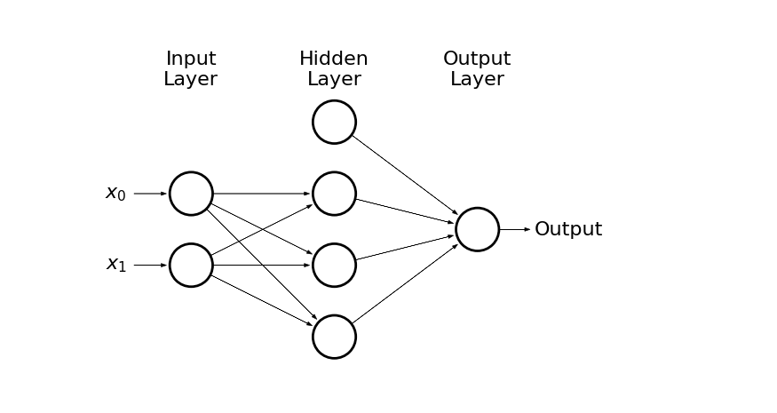
- Lets implement above network in
tensorflow
import tensorflow as tf x = tf.placeholder(tf.float32, [None, 1]) y = tf.placeholder(tf.float32, [None, 1]) w1 = tf.Variable(tf.random_normal([1, 3]), name='w1') w2 = tf.Variable(tf.random_normal([3, 1]), name='w2') b1 = tf.Variable(tf.random_normal([3]), name='b1') b2 = tf.Variable(tf.random_normal([1]), name='b2') h = tf.nn.sigmoid(tf.add(tf.matmul(x, w1), b1)) o = tf.add(tf.matmul(h, w2), b2) xent = tf.losses.mean_squared_error(y, o) cost = tf.reduce_mean(xent) opt = tf.train.GradientDescentOptimizer(0.25).minimize(cost) init = tf.global_variables_initializer()
- We need to reshape out training data
X_train = np.reshape(X, (-1,1)) Y_train = np.reshape(Y, (-1,1)) print("Original", X[:5], Y[:5], sep='\n\n') print("\nReshaped", X_train[:5], Y_train[:5], sep='\n\n')
Original [ 0.52226483 0.80798072 0.15974077 -0.50709742 0.78635136] [ 0.97538575 0.83448142 0.4117488 -0.89203221 0.38857674] Reshaped [[ 0.52226483] [ 0.80798072] [ 0.15974077] [-0.50709742] [ 0.78635136]] [[ 0.97538575] [ 0.83448142] [ 0.4117488 ] [-0.89203221] [ 0.38857674]]
- And we can train the model
X_test = np.arange(-1, 1, 0.01).reshape(-1,1) with tf.Session() as sess: sess.run(init) [sess.run(opt, feed_dict={x: X_train, y: Y_train}) for _ in range(10000)] prediction = sess.run(o, feed_dict={x: X_test})
plt.scatter(X_test, prediction, color='C2', label='NN') plt.scatter(X, Y, color='C1', label='Data') plt.plot(x_, np.sin(np.pi * x_), 'C0--', label='Truth') plt.legend();

More examples¶
- The lecturer was too lazy to prepare more examples, but we can play in tensorflow playground, which has awesome visualizations
MNIST¶
The MNIST database of handwritten digits, available from this page, has a training set of 60,000 examples, and a test set of 10,000 examples. It is a subset of a larger set available from NIST. The digits have been size-normalized and centered in a fixed-size image.
It is a good database for people who want to try learning techniques and pattern recognition methods on real-world data while spending minimal efforts on preprocessing and formatting.
- We can grab MNIST dataset using
tensorflow.examples.tutorials.mnist
import tensorflow as tf from tensorflow.examples.tutorials.mnist import input_data # to avoid warnings printed in the notebook tf.logging.set_verbosity(tf.logging.ERROR) # one hot -> label 0-9 -> 0...01, 0...10, ... mnist = input_data.read_data_sets("/tmp/", one_hot=True)
Successfully downloaded train-images-idx3-ubyte.gz 9912422 bytes. Extracting /tmp/train-images-idx3-ubyte.gz Successfully downloaded train-labels-idx1-ubyte.gz 28881 bytes. Extracting /tmp/train-labels-idx1-ubyte.gz Successfully downloaded t10k-images-idx3-ubyte.gz 1648877 bytes. Extracting /tmp/t10k-images-idx3-ubyte.gz Successfully downloaded t10k-labels-idx1-ubyte.gz 4542 bytes. Extracting /tmp/t10k-labels-idx1-ubyte.gz
- Lets see how data looks like
print(mnist.train.images.shape)
(55000, 784)
for i in range(4): plt.subplot(221 + i) # random training sample index = np.random.randint(len(mnist.train.images)) # train.images contains images in a form of a vector # so we reshape it back to 28x28 plt.imshow(mnist.train.images[index].reshape(28, 28), cmap='gray') # train.labels contains labels in one hot format plt.title(mnist.train.labels[index]) plt.tight_layout();

-
Today we solve this classification problem with
softmax -
During next lecture we apply convolutional NN on MNIST dataset
-
Lets start building the model
x = tf.placeholder(tf.float32, [None, 784]) # img -> 28x28 -> 784 y = tf.placeholder(tf.float32, [None, 10]) # 10 classes W = tf.Variable(tf.zeros([784, 10])) # weights b = tf.Variable(tf.zeros([10])) # bias out = tf.nn.softmax(tf.matmul(x, W) + b)
- Define the loss function and optimizer
cross_entropy = tf.reduce_mean( tf.nn.softmax_cross_entropy_with_logits(labels=y, logits=out) ) train_step = tf.train.GradientDescentOptimizer(0.5).minimize(cross_entropy)
- Train the model
# create a session sess = tf.Session() # initialize weights sess.run(tf.global_variables_initializer()) for _ in range(10000): # here instead of updating weights after the whole training set # we use batch size 100 (more about that in the next section) batch_xs, batch_ys = mnist.train.next_batch(100) # train_step is minimizing cross_entropy with learning rate 0.5 using GD # we pass small batches to placeholders x and y sess.run(train_step, feed_dict={x: batch_xs, y: batch_ys})
- Validate the model
# argmax returns the index of the heighest index in a tensor # equal returns True / False if prediction is equal/not equal to true label # cast would convert True/False to 1/0, so we can calculate the average correct_prediction = tf.equal(tf.argmax(out, 1), tf.argmax(y, 1)) accuracy = tf.reduce_mean(tf.cast(correct_prediction, tf.float32)) print(sess.run(accuracy, feed_dict={x: mnist.test.images, y: mnist.test.labels})) sess.close()
0.9241
-
It is pretty crazy what you can do with modern ML/DL frameworks
-
We have just learned our computer to recognize handwritten digits with a few lines of code
-
During next lecture we will improve the accuracy using deep neural networks
Gradient descent variations¶
-
In the gradient descent (GD) method weights are updated after a full loop over training data:
W \rightarrow W - \alpha\cdot\nabla_W L(W)
-
In the stochastic gradient descent (SGD) method weights are updated for each training sample:
W \rightarrow W - \alpha\cdot\nabla_W L(W; x^{(i)}; y^{(i)})
-
Note, that SGD is also called online learning
-
For the large dataset it is likely that GD would recompute gradients for similar examples before an update
-
SGD perform frequent updates but with a high variance, so objective function fluctuates
-
It may help to escape local minima
-
The common method, which is somehow between GD and SGD, is mini-batch gradient descent (MBGD) - the one we used for MNIST example:
W \rightarrow W - \alpha\cdot\nabla_W L(W; x^{(i; i+n)}; y^{(i; i+n)})
SGD on MNIST¶
- Lets see how the loss function looks like when applying SGD for training the network on MNIST data
# create a session sess = tf.Session() # initialize weights sess.run(tf.global_variables_initializer()) test_loss = [] # placeholder for loss value per iteration for _ in range(10000): # SGD -> batch size = 1 batch_xs, batch_ys = mnist.train.next_batch(1) # update weights sess.run(train_step, feed_dict={x: batch_xs, y: batch_ys}) # calculate loss funtion on test samples loss = sess.run(cross_entropy, feed_dict={x: mnist.test.images, y: mnist.test.labels}) # save it test_loss.append(loss)
plt.plot(np.arange(0, 10000, 1), test_loss);
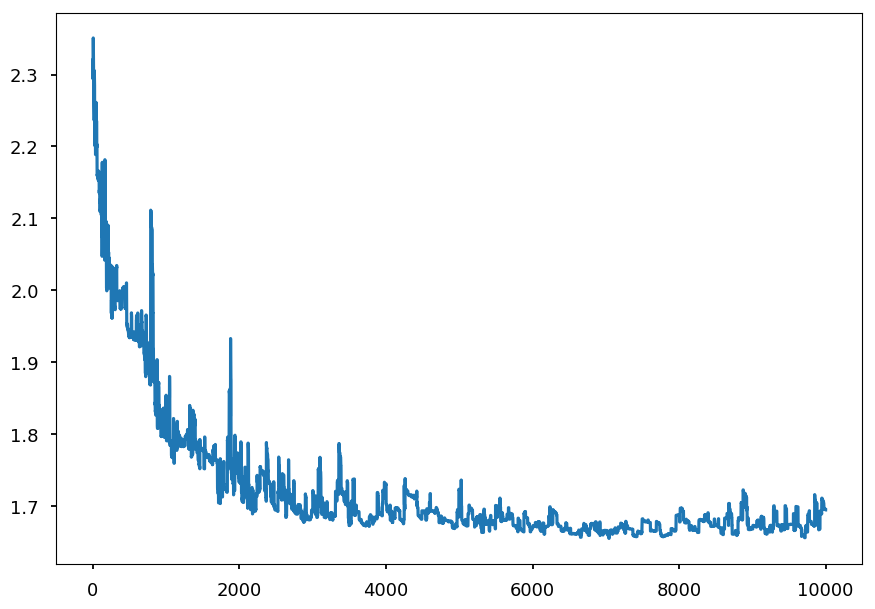
Momentum¶
- Online learning may help to escape local minima
x = np.linspace(-2, 2, 100) y1 = x**2 y2 = np.array([a**2 + np.sin(5*a) for a in x]) plt.subplot(121) plt.plot(x, y1) plt.scatter([-1.5], [3], c='k', s=300) plt.subplot(122) plt.plot(x, y2) plt.scatter([-1.45], [1.75], c='k', s=300);

- Another technique that can help escape local minima is to use a momentum term
$\begin{eqnarray}
v_t & = & \gamma\cdot v_{t-1} + \alpha\cdot\nabla_W L(W; x^{(i)}; y^{(i)}) \\
W &\rightarrow& W - v_t
\end{eqnarray}$
-
It is like pushing a ball down a hill and ball accumulates momentum
-
\gamma is another hyperparameter, usually set around 0.9
-
One may want a smarter ball, which can predict its future position
-
The future position is approximate by W - \gamma\cdot v_{t-1}
-
Nesterov accelerated gradient calculates gradient not w.r.t current weights, but w.r.t approximated future values:
$\begin{eqnarray}
v_t & = & \gamma\cdot v_{t-1} + \alpha\cdot\nabla_W L(W - \gamma\cdot v_{t-1} ; x^{(i)}; y^{(i)}) \\
W &\rightarrow& W - v_t
\end{eqnarray}$
Adaptive models¶
-
A drawback of regular gradient descent methods is a constant learning rate, which needs to be tuned by hand
-
if too small the training process is long
-
if too large the minimum may be skipped
-
-
There are several algorithms which adapt the learning rate during training
-
Adagrad, Adadelta, Adam are presented here, but please note there are more available
Adagrad¶
-
Let g_{ti} be the gradient of the objective function w.r.t the weight W_i at time step t:
g_{ti} = \nabla_WL(W_{t,i})
-
In this notation, SGD step for a parameter i can be written as:
W_{t+1, i} = W_{t,i} - \alpha g_{ti}
-
Adagrad modifies the learning rate \alpha based on previous gradients:
W_{t+1, i} = W_{t,i} - \frac{\alpha}{\sqrt{G_{t,ii} + \varepsilon}} g_{ti}
-
Where G_{t} is a diagonal matrix, where i, i elements are equal to the sum of all gradients w.r.t W_i up to step t
-
\varepsilon is just to ensure denominator not equal zero
-
Since G_t is diagonal, we can write the general formula using element-wise product:
W_{t+1} = W_{t}- \frac{\alpha}{\sqrt{G_{t} + \varepsilon}} \odot g_{t}
-
Note, that each weight has now its own training rate; they just share initial value \alpha
-
There is no need to tune \alpha anymore; usually one set it up to be around 0.01 and let Adagrad do the job
-
The disadvantage of Adagrad is that it accumulates squares of gradients in the denominator - at some point training rate is so small that the model is unable to learn anythng new
Adadelta¶
-
Adadelta is an extension of Adagrad
-
Its goal is to reduce the speed of training rate decreasing
-
The idea is to accumulate just a few last gradients instead all of them
-
Since it is highly inefficient, Adagrad implements this as an exponentially decaying average of all the squared gradients
-
Let E[g^2]_t be the average of the squared greadients up to step t
-
Let \gamma be decay constant (similar to momentum), then:
E[g^2]_t = \gamma\cdot E[g^2]_{t-1} + (1 - \gamma)\cdot g_t^2
-
And the training step is given by:
W_{t+1} = W_{t}- \frac{\alpha}{\sqrt{E[g^2]_t + \varepsilon}} g_{t}
-
Please note, that the denominator is just root mean squared (RMS) of the gradient:
W_{t+1} = W_{t}- \frac{\alpha}{RMS[g]_t} g_{t}
-
The author also note that in GD-like methods the update has different hypothetical units than weights itself:
units~of~\Delta w \sim units~of~g \sim units~of~\frac{\partial L}{\partial w} \sim \frac{1}{units~of~w}
-
Inspired by second order optimization method that using Hessian information (like Newton's method):
units~of~\Delta w \sim units~of~H^{-1}g \sim units~of~\frac{\frac{\partial L}{\partial w}}{\frac{\partial^2L}{\partial w^2}} \sim units~of~w
-
the nominator is replaced by RMS of of weights updates (assuming diagonal Hessian):
\Delta w = \frac{\frac{\partial L}{\partial w}}{\frac{\partial^2 L}{\partial w^2}} \Rightarrow \frac{1}{\frac{\partial^2 L}{\partial w^2}} = \frac{\Delta w}{\frac{\partial L}{\partial w}}
-
Since current update is not known until step is done, the following approximation is used:
\Delta W_t = - \frac{RMS[\Delta W]_{t-1}}{RMS[g]_t} g_{t}
-
Please note, that Adagrad does not require initial training rate!
-
Although, it is still not parameter-free model as one need to set up \gamma and \varepsilon
Adam¶
-
Similar to Adedelta Adam uses exponentially decaying average of past sqaured gradients v_t (notation from the original paper):
v_t = \beta_2 \cdot v_{t-1} + (1 - \beta_2)\cdot g_t^2
-
And similar to SGD with momentum Adam also keeps information about past gradients:
m_t = \beta_1 \cdot m_{t-1} + (1 - \beta_1)\cdot g_t
-
m_t and v_t are initialized with zeros
-
For \beta_{1,2}\sim 1 training is slow at the beginning
-
Thus, bias-corrected first and second moments are introduced:
$\begin{eqnarray}
\hat m_t & = & \frac{m_t}{1 - \beta_1^t} \\
\hat v_t & = & \frac{v_t}{1 - \beta_2^t}
\end{eqnarray}$
-
And the update rule is given by:
\Delta W_{t+1} = W_t - \frac{\alpha}{\sqrt{\hat v_t} + \varepsilon}\hat m_t
-
The authors suggest \beta_1 \approx 0.9, \beta_2 \approx 0.999, and \varepsilon\approx 10^{-8}
Regularization¶
-
As mentioned during last lecture, regularization is any modification to learning algorithm made to prevent overfitting
-
The common method is to add regularization term (regularizer) to a loss function L(W):
L(W) \rightarrow L(W) + \alpha R(W)
-
Two common regularizer are L1 or L2 norms
-
Ridge regression uses L2 regularization: R(W) = \sum\limits_i W_i^2
-
Lasso regression uses L1 regularization: R(W) = \sum\limits_i |W_i|
-
Why to penalize the magnitude of weights?
-
Lets consider a simple example
To regularize or not to regularize¶
- Lets consider again sinus dataset
from math import sin, cos, pi, exp def get_dataset(N=20, sigma=0.1): """Generate N training samples""" # X is a set of random points from [-1, 1] X = 2 * np.random.sample(N) - 1 # Y are corresponding target values (with noise included) Y = np.array([sin(pi*x) + np.random.normal(0, sigma) for x in X]) return X, Y # plot a sample X, Y = get_dataset(50) x_ = np.arange(-1, 1, 0.01) plt.scatter(X, Y, color='C1') plt.plot(x_, np.sin(np.pi * x_), 'C0--');

- Lets fit data to polynomial of order 20
N = 20 # polynomial order # add powers of x X_train = [[x**i for i in range(1, N)] for x in X] from sklearn.linear_model import LinearRegression reg = LinearRegression() reg.fit(X_train, Y);
- And plot prediction together with training data
X_test = np.linspace(-1, 1, 100) Y_test = reg.predict([[x**i for i in range(1,N)] for x in X_test]) plt.ylim([-1.5, 1.5]) plt.scatter(X, Y, color='C1') plt.plot(X_test, Y_test, 'C0');

-
It is clearly overfitted
-
Lets do the same using Ridge regression
from sklearn.linear_model import Ridge reg_l2 = Ridge(alpha=0.1) reg_l2.fit(X_train, Y) Y_test = reg_l2.predict([[x**i for i in range(1,N)] for x in X_test]) plt.ylim([-1.5, 1.5]) plt.scatter(X, Y, color='C1') plt.plot(X_test, Y_test, 'C0');

-
Play on your own with \lambda to see how it affects the result
-
Now, take a look at coefficients without regularizer
reg.coef_
array([ 2.60931184e+00, -1.34651207e+00, 2.04999890e+01, 9.00515668e+00,
-4.18472051e+02, -1.27117676e+02, 3.14310368e+03, 1.10582631e+03,
-1.24897897e+04, -4.36716920e+03, 2.86984815e+04, 8.89018057e+03,
-3.94741356e+04, -9.78295086e+03, 3.21343881e+04, 5.54204833e+03,
-1.43111414e+04, -1.26843444e+03, 2.69454755e+03])
-
Note, that coefficients increase drastically for large powers of x
-
High weights mean that a model put a lot of emphasis on a given features, which leads to overfitting
-
That is why we need to put some constraints on the magnitude of weights
-
Now, lets see how coefficients look like with L2 regularizer
reg_l2.coef_
array([ 2.3350277 , -0.00324186, -1.57606849, 0.04982775, -1.0117878 ,
-0.025911 , -0.4412411 , -0.04283921, -0.10340078, -0.03155621,
0.07582327, -0.01138888, 0.16245585, 0.01121341, 0.19718257,
0.03442763, 0.20359299, 0.05769045, 0.19518384])
-
Ridge regression causes coefficient shrinkage and reduces model complexity
-
Lets repeat the same for Lasso regression
from sklearn.linear_model import Lasso reg_l1 = Lasso(alpha=0.001) reg_l1.fit(X_train, Y) Y_test = reg_l1.predict([[x**i for i in range(1,N)] for x in X_test]) plt.ylim([-1.5, 1.5]) plt.scatter(X, Y, color='C1') plt.plot(X_test, Y_test, 'C0');
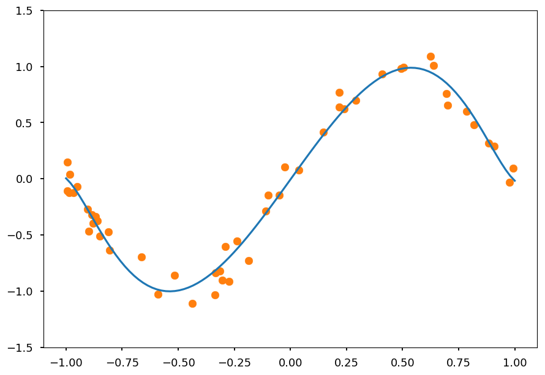
-
Once again we got a nice fit
-
But there is a difference - see the coefficients
reg_l1.coef_
array([ 2.779238 , -0. , -3.20859903, -0. , -0. ,
-0. , 0. , 0. , 0. , 0. ,
0.1980417 , 0. , 0.22056433, 0. , 0. ,
0. , 0. , 0. , 0. ])
-
Note, that in opposite to Ridge not all features are taken into account as some weights ended up being zero
-
Thus, Lasso regression additionally performs features selection, which is useful for data with many features
Summary¶
-
Neural networks are one of the most popular machine learning method these days
-
Note, that NN has much more hyperparameters than models described so far:
-
number of hidden layers
-
number of neurons
-
activation functions
-
learning algorithm settings (model, learning rate, momentum etc)
-
regularization method and its parameters
-
batch size in mini-batch gradient descent
-
-
It is crucial to use cross-validation for hyperparameter tuning
-
Next week "we need to go deeper"